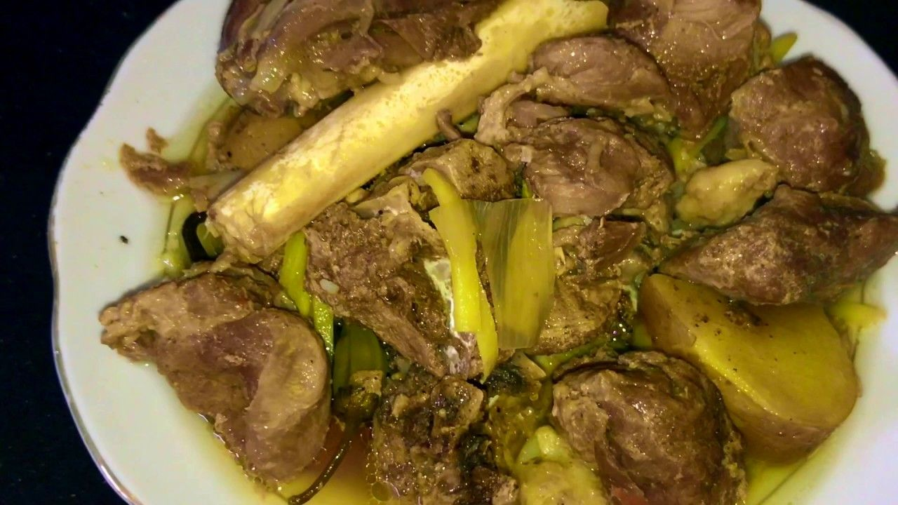

Dampokh
Ingrediants
- Meet 1kg(depending on number of person)
- Potato 1/2 kg
- Three onion
- Two Garlic
- Foure Tomato
- oil 1.5ml
- Salt 2 teaspone
Method
- very first drop oil to the presure cooker
- Then put potatos on oil
- then put meet on potatos
- then put onion (dont cut onion)
- then put tomatos (dont cut tomatos)
- then put Garlic (dont cut it)
- then added some salt to pressure cooker (amount is mentioned above)
- then close the presure cooker
- then keep the pressure cooker on very slow amount of heat for 1 hr and 15 mins
